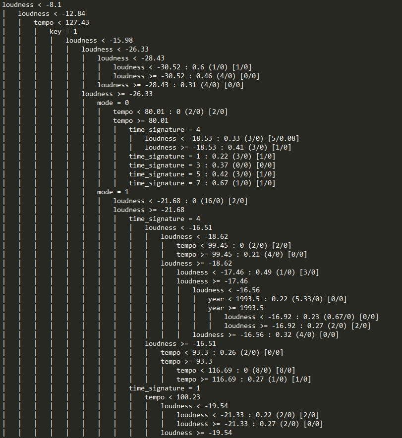

Introduction
What determines whether a song will top the charts or linger forever in some unknown corner of Youtube? Our project aims to generate an accurate predictor of the popularity of a song. A reliable hit predictor could be invaluable to several key players in the music industry. Record companies wishing to discover new talent would be able to do so without hearing artists in person. Singers themselves would learn what kinds of songs are most likely to project them into stardom. Songwriters would know how to tailor songs to maximize popularity.
It is also interesting and worthwhile from a cultural standpoint to evaluate the ways in which factors contributing to a song's popularity have varied over time. It is our secondary aim to gain insight into whether the nature of popular songs has changed over the decades.
Data
We used the Million Song Dataset (MSD), a collection of audio features and metadata of popular songs. The subset that we used included the following seven attributes taken directly from the MSD:
- the key that the song is in
- its loudness in decibels
- whether it is major or minor (mode)
- tempo in beats per minute
- release year
- the time signature in number of beats per bar
- and popularity
Solution
We tested a variety of classifiers in Weka, finally settling on the REPTree decision tree classifier. This was determined to be the most successful classifier, as it resulted in the smallest root mean squared error when predicting the song popularity. The REPTree algorithm uses regression tree logic and creates multiple trees over different iterations. From these, it selects the best tree. It minimizes overfitting by using reduced error pruning.
We then tuned the classifier to find the best parameters for the algorithm. Our final model resulted in a root mean squared error of 0.1051 for the training set. Evaluating the test set with this model yielded an error of 0.0693. Zero R was used as a baseline for comparison, and it returned a root mean squared error of 0.2475 for the training set and 0.2461 for the test set. The figure below shows the performance of our model. Song popularity is measured on a continuous scale from 0.0 to 1.0.
Key Results
Our decision tree model suggests that loudness, tempo, and mode are the major factors in determining whether a song will be popular or not. In particular, louder songs are generally predicted to be more popular than their quieter counterparts. Faster songs are preferred over slower ones. Songs in major keys tend to be better received than those in minor keys.
We also wondered whether the factors affecting song popularity have changed over the decades. Our model indicates that louder songs have recently become more popular. For instance, it predicts that songs before 1969 that are quieter will have a popularity of 0.61/1.0, whereas songs that are louder are predicted to have a popularity of 0.0/1.0 if the key is minor and 0.27/1.0 if it's in a major key. More analysis should be done to see whether this trend holds in instances outside our dataset.
Below is a snippet of our tree:

A Note
Music analysis through systems such as Shazam and Spotify allows people in the pop music business to identify popular songs through big data rather than relying solely on experts. This poses interesting questions regarding creativity, innovation, and artistry. While analytics may allow for better understanding of the tastes of the crowd, there is also concern that producing songs under these guidelines would affect the quality and direction of music in the future. There are limitations to what a dataset can express, and in the end, music is human and can only be as predictable as we are.
Full Report
Read a detailed report and check out a longer version of the tree!
Contact
katherinelin2016@u.northwestern.edu
rudolfnewman2017@u.northwestern.edu